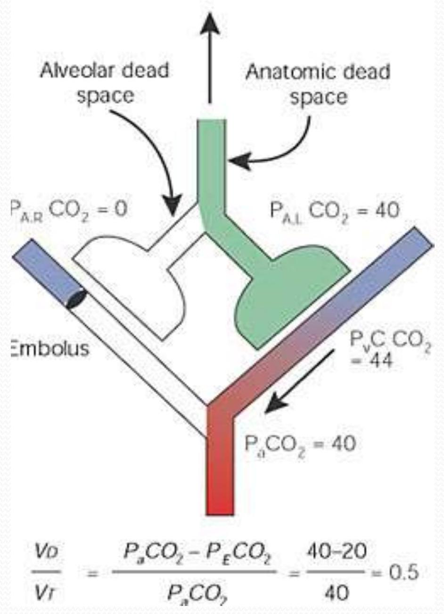

Physiology of Respiration
Contents
- Physiological Anatomy of Respiratory System
- Mechanism of respiration
- Pulmonary Volumes, Capacities & Function Tests
- Transport of Gases
- Exchange of Gases
- Regulation of Respiration
- Applied Ascpects
Physiological Anatomy of Respiratory System
- The respiratory system consists of the nasal cavity, pharynx, larynx, trachea, bronchi, and lungs, which is whole together called as the Respiratory Tract..
- Upper respiratory tract refers to: Nasal cavity, pharynx, and associated structures.
- Lower respiratory tract refers to: Larynx, trachea, bronchi, and lungs.
The Lungs & Alveoli
Respiratory Unit
Respiratory unit is the terminal portion of the Respiratory Tract. It includes:
- Respiratory Bronchioles
- Alveolar Ducts
- Antrum
- Alveolar Sacs
- Alveoli (Human beings have a thin layer of about 700 million alveoli within their lungs. Which is crucial for respiration, exchanging O2 & CO2 with the surrounding blood capillaries.)
Microscopic Structure of Alveoli
Types of Respiration
1. External Respiration:
- Exchange of O2 & CO2
- Between lungs & blood.
2. Internal Respiration:
- Exchange of gases
- between blood & tissues.
Internal respiration occurs in the capillaries. Internal Respiration Reactions:
$$\begin{gathered} \mathrm{HbO}_{2} \cdots \mathrm{Hb}+\mathrm{O}_{2} \\ \mathrm{Hb}+\mathrm{CO}_{2} \cdots \mathrm{HbCO}_{2} \\ \mathrm{CO}_{2}+\mathrm{H}_{2} \mathrm{O}_{2} \stackrel{\text{carbonic}}{\text{anhydras}} \mathrm{H}_{2} \mathrm{CO}_{3} \cdots \mathrm{H}^{+}+\mathrm{HCO}_{3}^{-} \\ \mathrm{H}^{+}+\mathrm{Hb} \rightarrow \mathrm{HHb} \end{gathered}$$
Respiratory Functions:
- Pulmonary Ventilation
- Diffusion of O2 and CO2 between the alveoli & the blood.
- Transportation of O2 & CO2 in the blood & body fluids to & fro from the body's tissue cells.
- Regulation of Ventilation.
Non- Respiratory Functions:
- Olfaction, Vocalization
- Defense Mechanism
- Anticoagulant Function
- Regulation of Body Temperature & Acid Base Balance
- Maintenance of Water balance
- Secretion of ACE Angiotensin Converting Enzyme
Mechanism of Respiration
Muscles of Respiration
- Primary Inspiratory: Diaphragm
- Accessory Inspiratory: Sternomastoid, Scaleni, Anterior Serrati, Elevators of Scapula & Pectorals
- Primary Expiratory: Internal Intercostal muscles
- Accessory expiratory: Abdominal muscles
Inspiration
- Diaphragm muscle contracts, increasing thoracic cavity size in the superior-inferior dimension
- External intercostal muscles contract, expanding lateral & anterior-posterior dimension
- INCREASED volume (about 0.5 liter), DECREASED pulmonary pressure ( -1 mm Hg ), air rushes into lungs to fill alveoli
Deep/forced inspirations as during exercise and pulmonary disease
- scalenes, sternocleidomastoid, pectorals are used for more volume expansion of thorax.

Expiration
- Quiet expiration (exhalation) - simple elasticity of the lungs DECREASES volume INCREASED pulmonary pressure -> movement of air out of the lungs
- Forced expiration - contraction of abdominal wall muscles (i.e. obliques & transversus abdominus)
Movements of Thoracic Cage
Movements of Lungs
Factors holding lungs AGAINST the thorax wall:
- Surface tension holding the "visceral" and "parietal" pleura together.
- Intrapulmonary pressure is ALWAYS slightly greater than intrapleural pressure by 4 mm Hg.
- Atmospheric pressure acting on the lungs.
- Atelectasis (collapsed lung) - hole in pleural "balloon" causes equalization of pressure and collapse of the lung.
- Pneumothorax - abnormal air in the intrapleural space, can lead to collapsed lung.
Factors facilitating lung movement AWAY from thorax wall
- Elasticity of lungs allows them to assume smallest shape for given pressure conditions.
- Fluid film on alveoli allows them to assume smallest shape for given pressure conditions.
Pulmonary Volumes, Capacities & Function Tests
A. Respiratory Volumes
- Tidal volume (TV) - normal volume moving in/out (0.5 L).
- Inspiratory reserve volume (IRV) - volume inhaled AFTER normal tidal volume when asked to take deepest possible breath (2.1-3.2 L).
- Expiratory reserve volume (ERV) - volume exhaled AFTER normal tidal volume when asked to force out all air possible (1.- 2.0 L).
- Residual volume (RV) - air that remains in lungs even after totally forced exhalation (1.2 L).
B. Respiratory Capacities
- Inspiratory capacity (IC) = TV + IRV (MAXIMUM volume of air that can be inhaled).
- Functional residual capacity (FRC) = ERV + RV (all non-tidal volume expiration).
- Vital capacity (VC) = TV + IRV + ERV (TOTAL volume of air that can be moved).
- Total lung capacity (TLC) = TV + IRV + ERV + RV (the SUM of all volumes; about 6.0 L).
Dead Space and Function Tests
C. Dead Space
- Anatomical dead space - all areas where gas exchange does not occur (all but alveoli).
- Alveolar dead space - non-functional alveoli.
- Total dead space = Anatomical + Alveolar.
Physiologic dead space = Anatomic dead space + Alveolar dead space
D. Pulmonary Function Tests
- Spirometer - measures volume changes during breathing.
- Obstructive pulmonary disease - increased resistance to air flow (bronchitis or asthma).
- Restrictive disorders - decrease in Total Lung Capacity (TB or polio).
- Minute respiratory volume (MRV) - total volume flowing in & out in 1 minute (resting rate = 6 L per minute).
- Forced vital capacity (FVC) - total volume exhaled after forceful exhalation of a deep breath.
- Forced expiratory volume (FEV) - FEV volume measured in 1 second intervals (FEV1, ...).
E. Alveolar Ventilation Rate
AVR = Breath Rate X (TV - Dead space)
(Normal) AVR = 12/minute X (500 ml - 150 ml)
(Normal) AVR = 4.2 L/min
Transport of Gases
Transport of O2:
- As simple solution (3% i.e. 0.3 ml/100 ml)
- In Combination with Hb (97%)
Transport of CO2:
- As dissolved form (7%)
- As carbonic Acid (Negligible)
- As Bicarbonate (63%)
- As Carbamino Compounds (30%)
Oxygen Dissociation Curve
- Oxygen-hemoglobin dissociation curve
- 104 mm (lungs) - 100% saturation (20 ml/100 ml)
- 40 mm (tissues) - 75% saturation (15 ml/100 ml)
- right shift - Decreased Affinity, more O2 unloaded
- left shift - Increased Affinity, less O2 unloaded
A. Effects of Temperature
- HIGHER Temperature → Decreased Affinity (right)
- LOWER Temperature → Increased Affinity (left)
B. Effects of pH (Acidity)
- HIGHER pH → Increased Affinity (left)
- LOWER pH → Decreased Affinity (right) "Bohr Effect"
C. Effects of Diphosphoglycerate (DPG)
- DPG - produced by anaerobic processes in RBCs
- HIGHER DPG → Decreased Affinity (right)
- Thyroxine, testosterone, epinephrine, NE - increase RBC metabolism and DPG production, cause RIGHT shift.
Carbon Dioxide Dissociation Curve
- Bohr Effect - Formation of Bicarbonate (through Carbonic Acid) leads to LOWER pH (H+ increase), and more unloading of O2 to tissues. Since Hb "buffers" to H+, the actual pH of blood does not change much.
- Chloride Shift - Chloride ions move in opposite direction of the entering/leaving Bicarbonate, to prevent osmotic problems with RBCs
Exchange of Gases
A. External Respiration (Air & Lungs)
- Partial Pressure Gradients & Solubilities
- Oxygen: alveolar (104 mm) ---> blood (40 mm)
- Carbon Dioxide: blood (45 mm) ----> alveolar (40 mm) (carbon dioxide much more soluble than oxygen)
- Alveolar Membrane Thickness (0.5-1.0 micron) very easy for gas to diffuse across alveoli
- (b). Edema - increases thickness, decreases diffusion
- Total Alveolar Surface Area for Exchange
- Total surface area healthy lung = 145 sq. Meters
- Emphysema - decreases total alveolar surface area
- Ventilation-Blood Flow Coupling
- Low O2 in alveolus → vasoconstriction
- High O2 in alveolus → vasodilation
- High CO2 in alveolus → dilate bronchioles
- Low CO2 in alveolus → constrict bronchioles
B. Internal respiration (Blood & Tissues)
- Oxygen: blood (104 mm) → tissues (40 mm)
- Carbon Dioxide: tissues (>45 mm) → blood (40 mm)
Regulation of Respiration
Nervous Mechanism
A. Medullary Respiratory Centers
- Inspiratory Center (Dorsal Resp Group) - rhythmic breathing
- Phrenic nerve, Intercostal nerves, diaphragm + external intercostals
- Expiratory Center (Ventral Resp Group) - forced expiration)
- Phrenic nerve, Intercostal nerves, Internal intercostals + abdominals (expiration)
- Eupnea - normal resting breath rate (12/minute)
- Drug overdose - causes suppression of Inspiratory Center
B. Pons Respiratory Centre
- Pneumotaxic center - slightly inhibits medulla, causes shorter, shallower, quicker breaths
- Apneustic center - stimulates the medulla, causes longer, deeper, slower breaths
C. Control of Rate & Depth of Breathing
- Breathing rate - stimulation/inhibition of medulla.
- Breathing depth - activation of inspiration muscles.
- Hering-Breuer Reflex - stretch of visceral pleura that lungs have expanded (vagal nerve).
D. Hypothalamic Control - emotion + pain to the medulla
E. Cortex Controls (Voluntary Breathing) - can override medulla as during singing and talking
Chemical Mechanism
A. Chemoreceptors
- Central chemoreceptors - located in the medulla
- Peripheral chemoreceptors - large vessels of neck